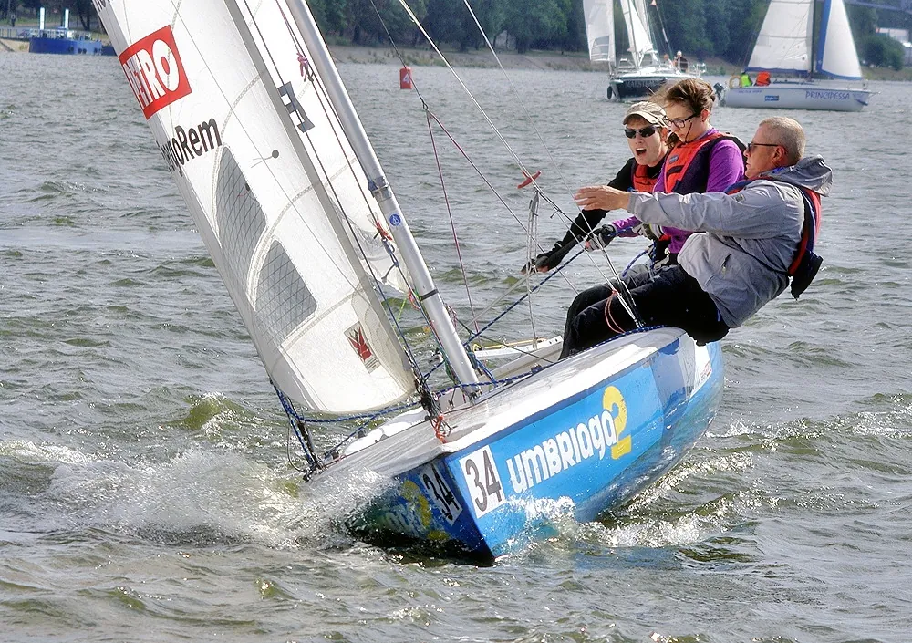
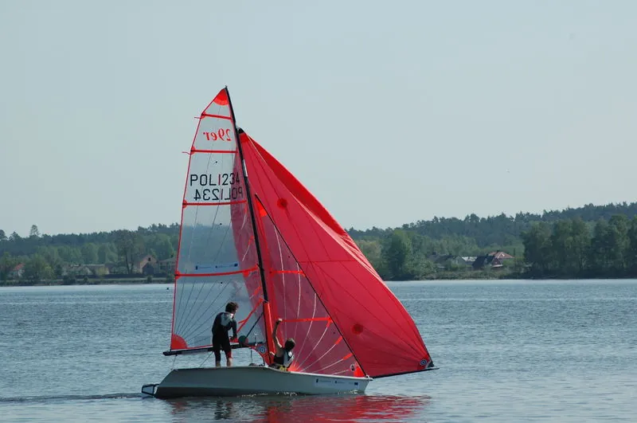
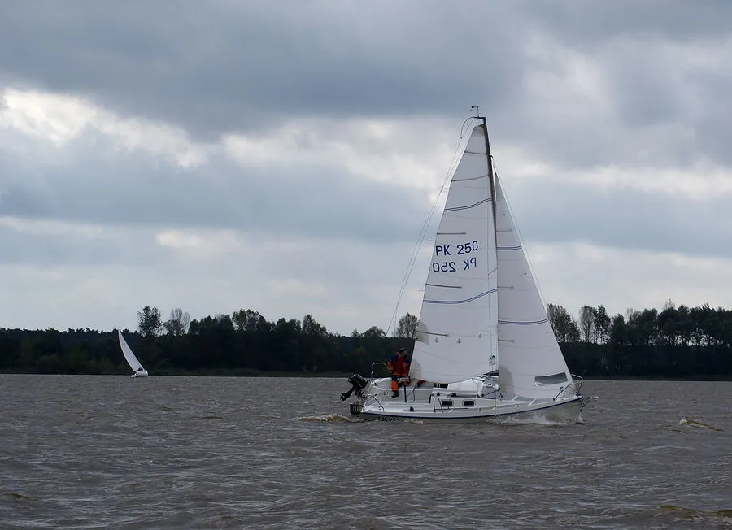
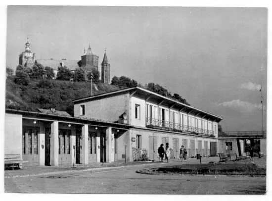
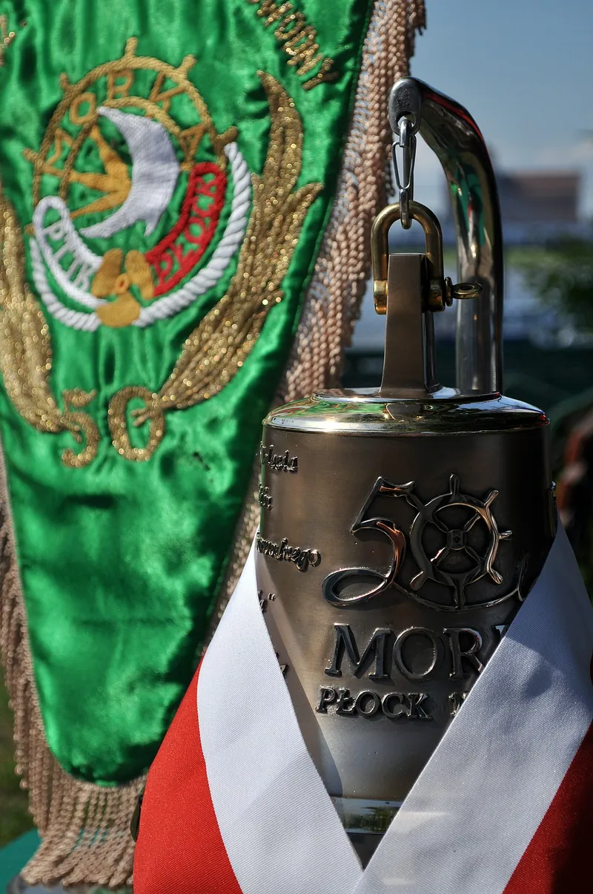

Wyciąganie jachtów
W sobotę 17 października od 8:00 wyciągamy łodzie. Prosimy o demontaż y-bomów i ułożenie ich na pomostach. 24 października wyciągamy pomosty, obecność mile widziana.
Oddział Żeglarsko-Motorowodny PTTK „Morka”
Przystań przy ul. Rybaki 10, na 633 km Wisły. Organizujemy szkolenia żeglarskie, rejsy, regaty i spotkania towarzyskie.

Z życia klubu
W sobotę 17 października od 8:00 wyciągamy łodzie. Prosimy o demontaż y-bomów i ułożenie ich na pomostach. 24 października wyciągamy pomosty, obecność mile widziana.
Sobota, 26 września. Spotkanie organizacyjne o 10:00, start o 11:00. Płyniemy do wysokości klubu Kontra i wracamy, a po powrocie grill, kiełbaski i herbata.
5 września, Wisła między 632 a 635 km. Zapisy w Biurze Regat od 8:30 do 10:00, wpisowe 50 zł od jachtu (Optimist bez opłaty). Klasy T, T1, T2, T3, Omega i Optimist.
Zawiadomienie o regatach (PDF)11 lipca, Wisła między 648 a 653 km. Zapisy od 8:00 do 9:30, wpisowe 100 zł od jachtu. Cztery wyścigi w klasach T, T-1, T-2, T-3, Omega i Optimist Open, w cyklu Płockiego Żeglarskiego Grand Prix.
Zawiadomienie o regatach (PDF)Szkolenia
Przygotowanie do egzaminu na patent żeglarza jachtowego: zajęcia teoretyczne i praktyka na Wiśle.
Grzegorz Serejko · 606 884 482Szkolenie na uprawnienia do prowadzenia łodzi motorowych.
Michał Misiak · 500 268 104Zajęcia dla dzieci i młodzieży. Latem prowadzimy półkolonie żeglarskie dla dzieci w wieku 6–15 lat.
Leszek Bartosik · 601 373 232
Przystań
Przyjmujemy jachty, kampery i namioty także od osób spoza klubu. Ceny dla osób niezrzeszonych na sezon 2026.
| Cumowanie jachtu | 30 zł / doba |
|---|---|
| Wodowanie ze slipu | 40 zł + 50 zł wyciągarka |
| Kamper lub przyczepa | 80 zł / doba |
| Pole namiotowe | 30 zł / doba + 5 zł od osoby |
| Nocleg w pokoju | 50 zł / doba |
| Samochód na terenie przystani | 30 zł / doba |
W cenie postoju sanitariaty, przy kamperach także prąd. Opłata liczona za każdą rozpoczętą dobę.

Sezon 2026
O klubie
Stanicę przy ul. Rybaki 10 ukończono w 1961 roku. Stoi na nasypie o powierzchni 3000 m², wbudowanym między dwie główki na Wiśle, a jej słupowo-szkieletowa konstrukcja przetrwała nawet zimową powódź zatorową w 1982 roku.
W 1963 roku pracownicy budowanego kombinatu petrochemicznego dostali pierwsze żaglówki i rozegrali na Wiśle pierwsze regaty. Jesienią 1964 roku sekcja przyjęła nazwę Klub Wodniaków „Morka”. Dziś jako Oddział Żeglarsko-Motorowodny PTTK szkolimy kolejne pokolenia żeglarzy i organizujemy regaty o Puchar Wrzosu.


Kontakt